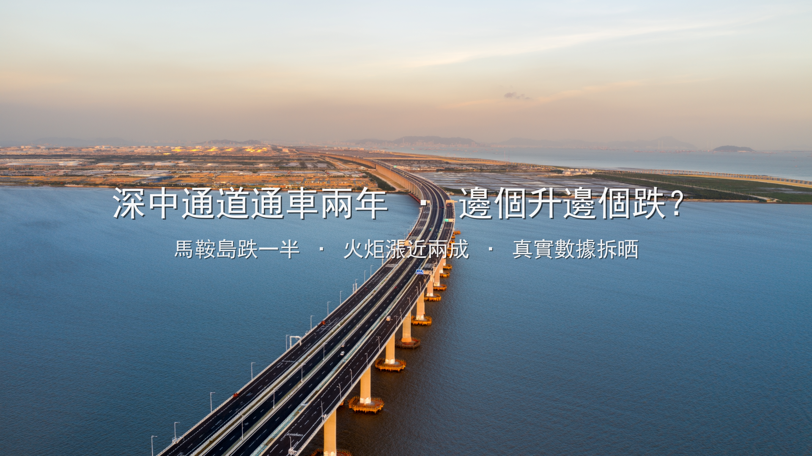

港人中山置業通 Jacky · 中山人，祖籍廣西，從業8年
我叫Jacky，中山人，祖籍廣西，喺中山做地產8年，帶過超過500組香港客睇樓。
2024年6月30日，深中通道通車。
你記唔記得通車之前，啲sales點同你講？
「而家買馬鞍島，通車之後一定升！」
「深中通道一開，呢度就係下一個前海！」
「而家唔買，通咗車你想買都買唔到！」
兩年之後嘅今日，我同你一齊計清條數。
數據來源：中山多個新房平台2026年6月成交數據、貝殼二手房掛牌數據、深中通道官方通行數據交叉比對，僅供參考。

先講個事實。唔係我作嘅，係真實數據：
| 時間節點 | 馬鞍島新房（元/㎡） | 馬鞍島二手（元/㎡） |
|---|---|---|
| 2024年6月（通車當月） | 1.8-2.0萬 | 1.6-1.8萬 |
| 2025年6月（通車後1年） | 1.3-1.5萬 | 1.1-1.3萬 |
| 2026年6月（通車後2年） | 1.0-1.7萬 | 0.8-1.3萬 |
由高峰期3萬，跌到而家1萬出頭。跌咗超過50%。
如果你2022年聽咗sales講，買咗個100平方米單位，300萬人仔。而家同類單位，150萬有找。未計利息、未計管理費、未計通脹。淨係本金已經蝕咗150萬。
你可能會問：「點解會咁？深中通道唔係大利好咩？」
通車之前嗰幾年，個個都諗住深圳人會湧過嚟。馬鞍島變咗發展商嘅戰場——雅居樂、萬科、招商、保利、粵海，全部插旗。同一時間推出海量樓盤，供應量遠超實際需求。
通車之後，深圳人確實有嚟——但係嚟睇樓，唔係嚟買樓。點解？
馬鞍島嘅買家結構，通車前90%以上係投資客——深圳投資客、廣州投資客、香港投資客。佢哋唔係買嚟住，係買嚟等升值。
通車之後，升值冇出現。投資客一齊放盤，二手供應爆燈。為咗甩手，個個劈價。你劈50萬，我再劈80萬——惡性循環。
而家馬鞍島嘅真實成交：
| 樓盤 | 均價（元/㎡） | 總價門檻 |
|---|---|---|
| 萬科城市之光（民眾） | ~10,900 | — |
| 招商臻灣府 | ~15,000 | 150萬起 |
| 中山粵海城 | ~15,000 | 一線臨海現房 |
| 萬科深業灣中新城 | 16,000-17,500 | 120萬起 |
| 保利天匯 | ~16,000 | 150萬起 |
比起高峰期，呢啲價錢已經「好平」。但問題係：你買咗之後，賣俾邊個？ 馬鞍島二手市場到而家都冇真正嘅「用家」承接。
而家講另一邊。
同一個深中通道、同一個通車時間。火炬開發區臨海片區，2026年Q1二手掛牌均價同比漲咗18.7%。中介帶看量翻咗2.3倍。
唔係概念炒作。係實打實有人搬過嚟住。
點解？
智慧健康產業園二期已經投產，引進12家企業，平均月薪9,800蚊。即係有真實嘅就業人口、真實嘅居住需求。唔係投資客賭升值，係打工仔要搵地方住。
東部外環高速2025年12月貫通，火炬到深圳機場42分鐘。記住，42分鐘係「真實行車時間」，唔係廣告口號。配合深中通道，火炬嘅交通網絡係立體嘅，唔係單點嘅。
中山港小學新校區今年9月啟用，學位多480個。聽落好細？但對於一個新發展區，480個學位代表嘅係幾百個家庭——真係搬過嚟住、真係日日接返學放學嘅家庭。
馬鞍島得一個「通道出口」。火炬有工廠、有學校、有醫院、有商業。有人真正搬過嚟住、每日用呢條路返工。
呢個就係差距。
深中通道係一條路。路本身唔會令樓升值。
路嘅價值在於——有咩人去用呢條路，同埋佢哋用嚟做咩。
| 馬鞍島 | 火炬開發區 | |
|---|---|---|
| 買家結構 | 90%+投資客→集體撤退 | 產業人口+本地剛需 |
| 配套現狀 | 大部分「規劃中」 | 產業投產、學校落地 |
| 二手市場 | 劈價求售、冇人接盤 | 帶看量翻2.3倍 |
| 兩年表現 | 跌超50% | 漲18.7% |
同一個深中通道。兩個完全唔同嘅結果。
呢個唔係馬後炮。2024年通車嗰陣，我已經同啲客講：買有產業嘅板塊，唔好買得個出口嘅板塊。
港人嚟中山買樓，最容易中嘅伏就係「概念」兩個字。
深中通道係概念。四代宅係概念。南中城際係概念。每個概念聽落都好吸引、好似係「最後機會」。
但我想同你講：
我知呢篇文會得罪好多人。馬鞍島仲有好多盤要賣，發展商同代理未必鍾意我咁樣講。
但我係中山人，祖籍廣西，做咗8年地產。我嘅責任係同你講真話——包括話你知邊度跌、邊度升、邊度值得睇、邊度要避開。
深中通道通車兩年，俾我哋最大嘅教訓係：
中山買樓，配套＞概念。你係買一個生活場所，唔係買一個故事。
路會通、橋會起、政策會變。但一個地方有冇人真正想住——呢個先係決定樓價長線走勢嘅唯一因素。
如果你身邊有朋友仲喺度諗「深中通道概念盤」，轉發呢篇文俾佢。 佢可能會唔開心十分鐘，但會多謝你十年。
我整理咗一份 《2026深中通道沿線板塊真實對比表》，入面有：
PM我，免費攞。我親自覆你。
*港人中山置業通 Jacky · 中山人，祖籍廣西，從業8年 · 數據來源：中山多個新房平台2026年6月成交數據、貝殼二手房掛牌數據、深中通道官方通行數據交叉比對*
📱 PM我，免費領取《2026深中通道沿線板塊真實對比表》
港人中山置業通 Jacky · 中山人，祖籍廣西，從業8年